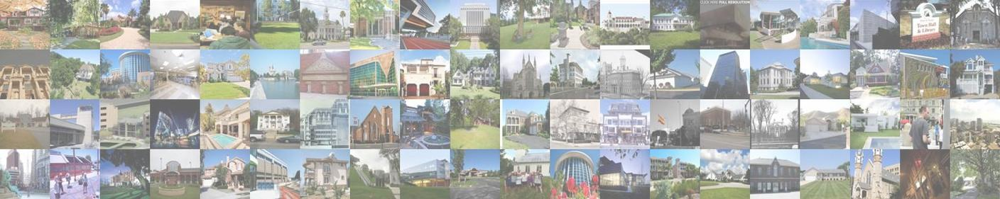

MIT CSAIL6.8300/6.8301: Advances in Computer Vision |
||
Spring 2024 |
||

Course Overview
This course covers fundamental and advanced domains in computer vision, covering topics from early vision to mid- and high-level vision, including basics of machine learning and convolutional neural networks for vision.
Announcements
Feb 6, 2024: Welcome to 6.8300/6.8301!
Make sure to check out the course info below, as well as the schedule for updates. The course units are 3-0-9 for 6.8300 (Graduate Level, TQE Subject: Group 3 - Artifical Intelligence) and 4-0-11 for 6.8301 (Undergraduate Level, CI-M Subject). The prerequisites of this course are (6.1200 or 6.3700) and (18.06 or 18.C06). Good luck with your semester!
Course Information


CI-M Instructors
Administrative Assistant
adv-cv-personal@mit.edu
Teaching Assistants
Please use the course Piazza page for all communication with the teaching staff.


Time and Classroom
01:00 pm - 2:30 pm every Tuesday and Thursday in 26-100.Office Hours (All times in ET)
Please direct all problem set questions to TAs rather than instructors!
Instructors
Sara: Monday 9am-10am, 45-741H (office)Kaiming: Fri 11am-12pm, 45-701H (office)
Vincent: TBA
Mina: Monday 10am-11am (see Canvas for zoom link)
TAs
Room 24-310 unless note zoom belowWhich TA for which OH is tracked on the TA OH calendar.
Mondays 2pm – 5pm
Tuesdays 10am-12pm and 2:30pm – 4:30pm
Wednesdays 9am-10am and 11am-12pm Both on zoom: https://mit.zoom.us/j/99331989120.
Thursdays 9am-10am and 3pm-5pm
Fridays 9am-1pm
Psets: 60%
Note: All psets are weighted equally.
Final project: 40%
Note: For 6.8301 students, a quarter of the final project grade (i.e., 10% of the course grade) will be based on participation in communication recitations (attendance is mandatory) and specific CI-M related tasks (relating mostly to the project proposal) as part of the CI-M requirement for the course. Failure to complete the CI-M component will result in a failing grade for 6.8301 students.